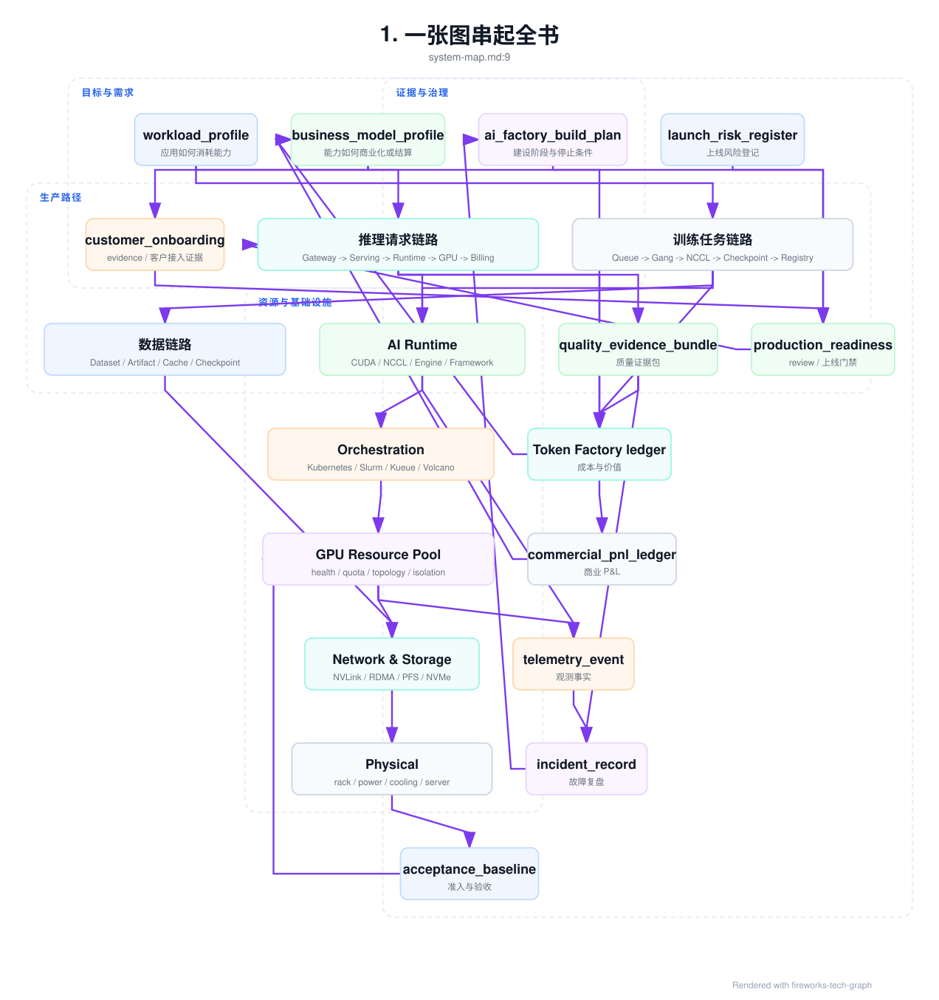

系统地图与工程索引¶
本页不是新的正文层级，而是全书的索引页。它帮助读者按三种方式进入本书：按角色阅读、按工程对象检索、按故障症状定位。AI Factory 的难点不在于名词数量，而在于把应用、平台、模型、运行时、调度、GPU、网络、存储、物理设施、SRE、成本账本、商业模式和建设路径连成可验证的生产系统。
全书的写作和审稿遵循 Doc Coauthoring 审稿标准：每章必须说明上下文、给出读者测试，并能在主题链路中通过新读者问题验证。
1. 一张图串起全书¶

这张图的读法是：需求对象先定义系统要生产什么，生产路径把请求和任务落到运行时与资源池，资源层用准入和观测证明自己可用，生产闭环再用 SRE、经济账本、风险登记和建设计划把运行结果反哺到商业模式。若某个项目只有中间的 GPU 和 Runtime，而缺少两端的 profile、baseline、telemetry、ledger 和 PRR，它还不是完整 AI Factory。
2. 按角色阅读¶
| 读者角色 | 首选入口 | 需要补齐的章节 | 阅读目标 |
|---|---|---|---|
| 应用工程师 | 第 1 章：从一个 Chat 请求开始 | 第 2、3、4、6、7、13、41 章 | 理解 prompt、context、RAG、Agent、质量反馈、token 计量和应用成本如何影响平台设计。 |
| Platform / MaaS 工程师 | 第 5 章：MaaS 平台 | 第 6、7、8、14、15、37、40 章 | 理解 Gateway、租户、路由、限流、计量、模型服务和 SRE 如何形成 API 产品。 |
| 模型与 Runtime 工程师 | 第 15 章：推理引擎 | 第 9、10、13、14、16、17、18、19 章 | 理解模型结构、训练推理运行时、并行、通信和版本兼容如何影响吞吐、质量和成本。 |
| 调度与 GPU 平台工程师 | 第 20 章：AI Workload 的形态 | 第 21、22、23、24、25、28、38 章 | 理解 AI workload、容器、Kubernetes、Slurm、GPU 资源池、拓扑和准入如何协同。 |
| 网络与存储工程师 | 第 30 章：AI 网络基础 | 第 31、32、33、18、38、39 章 | 理解 scale-up/scale-out、RDMA、NCCL、checkpoint、模型权重加载和故障树。 |
| 机房与硬件工程师 | 第 34 章：GPU 服务器 | 第 35、36、28、38、40、41 章 | 理解 GPU server、power、cooling、rack capacity 和 tokens/W 如何变成可交付产能。 |
| SRE / 运维工程师 | 第 37 章：AI Factory 可观测性 | 第 38、39、40、28、29、41 章 | 理解观测事实、验收基线、故障树、变更和 error budget 如何闭环。 |
| 商业与技术负责人 | 第 41 章：Token Factory 视角 | 第 42、43、44、4、7、40 章 | 理解 token、GPU hour、业务结果、SLA、成本、毛利和建设路线如何对齐。 |
3. 核心工程对象索引¶
这些对象是全书逐步沉淀的“事实单元”。它们不是数据库表设计，而是读者做架构评审、故障复盘、上线门禁和成本分析时应该能拿出来的证据。
| 对象 | 解决的问题 | 主要章节 | 连接的后续对象 |
|---|---|---|---|
workload_profile |
描述应用如何消耗 token、工具、数据和资源。 | 第 4、44 章 | application_readiness_review、business_model_profile、production_readiness_review |
multimodal_workload_profile |
描述图片、音频、视频、扫描文档等媒体 workload 的输入形态、预处理、派生产物、质量、保留和计量口径。 | 第 4、20、44 章 | media_processing_workload、media_artifact_manifest、multimodal_prr_drill |
media_processing_workload |
把 OCR、ASR、抽帧、layout、embedding 等媒体预处理阶段作为可调度、可重试、可计量 workload。 | 第 20 章 | media_processing_pipeline_record、multimodal_metering_event |
media_artifact_manifest |
记录原始媒体、OCR/ASR、页面/帧、layout、embedding、权限、保留和派生产物引用。 | 第 33、37、41、44 章 | multimodal_serving_contract、multimodal_quality_gate_execution、multimodal_metering_event |
media_processing_pipeline_record |
记录媒体上传、扫描、解码、渲染、OCR/ASR、layout、embedding 的阶段事实和资源消耗。 | 第 33、37、41、44 章 | multimodal_evidence_bundle、multimodal_cost_ledger |
multimodal_serving_contract |
把多模态模型的 processor、encoder、media manifest、source region、输出引用和 usage 口径绑定为 serving 契约。 | 第 14、37、44 章 | multimodal_quality_gate_execution、multimodal_metering_event |
multimodal_quality_gate_execution |
验证 OCR/ASR、表格、视觉 grounding、source region、隐私和人工复核等多模态质量门禁。 | 第 13、14、37、44 章 | multimodal_evidence_bundle、production_readiness_review |
multimodal_evidence_bundle |
冻结多模态事故中的 media manifest、pipeline、serving contract、quality gate、metering 和保留/删除证据。 | 第 37、44 章 | multimodal_cost_ledger、multimodal_prr_drill |
multimodal_metering_event |
计量 text token、媒体页/帧/秒/tile、OCR token、预处理 CPU/GPU 秒、模型 GPU 秒和存储天数。 | 第 41、44 章 | multimodal_cost_ledger、billing_dispute_replay |
multimodal_cost_ledger |
汇总多模态上传、预处理、模型、派生产物保留、失败重试、人工复核和删除审计成本。 | 第 41、44 章 | commercial_pnl_ledger、production_readiness_review |
multimodal_prr_drill |
演练多模态上线前的文件异常、OCR/layout 回归、引用回放、删除派生产物、计量 hold 和成本账本。 | 第 44 章 | production_readiness_review、multimodal_cost_ledger |
application_readiness_review |
判断行业应用是否具备生产接入条件。 | 第 4 章 | quality_gate_record、data_boundary_policy、cost_ledger |
customer_onboarding_evidence |
证明客户或关键租户的 tenant、项目、API Key、模型访问、预算、SLA、支持和数据边界已准备好。 | 第 4、5、44 章 | tenant_boundary、sla_credit_model、production_readiness_review |
business_model_profile |
描述价值单位、客户承诺、计量和退出责任。 | 第 42 章 | commercial_readiness_matrix、Token Factory ledger |
sla_credit_model |
把 SLA 指标、排除项、credit 输入、赔付上限和 invoice 动作结构化。 | 第 5、7、40 章 | sla_operation_record、sla_credit_replay、reliability_cost_ledger |
private_deployment_acceptance_record |
记录私有化交付的离线包、版本矩阵、GPU runtime、RAG ACL、升级回滚、诊断包和责任矩阵。 | 第 42、44 章 | launch_risk_register、production_readiness_review |
release_train_record |
把 baseline、driver、OFED、container runtime、Toolkit、device plugin、base image 和验收脚本组合成可灰度、可回滚的发布列车。 | 第 29、40、44 章 | change_safety_case、baseline_invalidation_record、production_readiness_review |
lts_support_policy |
定义长期支持 baseline、backport、EOL、升级路径和客户通知，防止现场版本无限分叉。 | 第 29、42、44 章 | release_train_record、private_delivery_lifecycle_contract |
support_ticket_taxonomy |
把客户问题分成 incident、request、problem、change、billing dispute 和 security case，并绑定 owner、时钟和证据。 | 第 40、42、44 章 | diagnostic_bundle_sla、incident_record、billing_dispute_replay |
diagnostic_bundle_sla |
定义不同事故和客户支持场景下诊断包的采集时限、脱敏、导出、客户同意和留存审计。 | 第 37、40、42、44 章 | support_ticket_taxonomy、security_evidence_bundle |
offline_release_bundle_manifest |
把 release train 封装成私有化或受限出网环境可导入、可签名、可回滚、可验收的离线发布包。 | 第 29、33、42、44 章 | offline_import_record、offline_upgrade_rehearsal、private_delivery_lifecycle_contract |
offline_import_record |
记录客户现场实际导入的镜像、模型 artifact、RAG index、chart、配置和 migration，并与离线包 digest 对账。 | 第 33、37、42、44 章 | offline_upgrade_rehearsal、private_delivery_diagnostic_export |
offline_upgrade_rehearsal |
在私有化或离线环境升级前演练镜像导入、artifact/cache、数据迁移、runtime smoke、回滚和诊断导出。 | 第 33、42、44 章 | private_deployment_acceptance_record、release_train_record |
private_delivery_diagnostic_export |
在不远程登录、不导出生产数据时，导出私有化事故所需的脱敏运行 digest、导入记录、runtime、cache 和 migration 证据。 | 第 37、42、44 章 | support_ticket_taxonomy、private_delivery_incident_cost_record |
field_patch_governance |
约束现场紧急补丁的适用条件、签名 delta、客户审批、过期时间、合回 release train 和成本归因。 | 第 40、42、44 章 | release_train_record、commercial_pnl_ledger |
field_patch_execution_record |
记录现场补丁实际应用到哪些镜像、chart、配置、cache 和服务，如何验证、回滚、过期并合回 release train。 | 第 40、41、44 章 | private_delivery_incident_cost_record、commercial_pnl_ledger |
private_delivery_lifecycle_contract |
把私有化客户的 release、LTS、支持、离线升级、补丁、EOL 和成本控制写成长期责任对象。 | 第 42、44 章 | commercial_pnl_ledger、production_readiness_review |
private_delivery_incident_cost_record |
把私有化升级失败、现场补丁回归或客户环境漂移造成的支持、重打包、迁移回滚、cache 预热和 credit 成本写入 P&L。 | 第 41、44 章 | commercial_pnl_ledger、production_readiness_review |
private_delivery_prr_upgrade_drill |
演练私有化上线前的离线包导入、digest 错配拒绝、artifact 回滚、RAG ACL 迁移、现场补丁和脱敏诊断导出。 | 第 44 章 | production_readiness_review、private_delivery_incident_cost_record |
commercial_pnl_ledger |
汇总收入、折扣、SLA credit、支持、私有化交付、预留容量和各类成本账本。 | 第 41、42、44 章 | business_model_profile、launch_risk_register |
launch_risk_register |
记录上线剩余风险、owner、证据缺口、缓解措施、停止条件和关闭条件。 | 第 44 章 | production_readiness_review、incident_record |
ai_factory_build_plan |
把建设阶段、证据、owner 和停止条件结构化。 | 第 44 章 | architecture_decision_record、production_readiness_review |
architecture_decision_record |
记录 GPU、网络、存储、调度、runtime 和商业模式的取舍。 | 第 44 章 | change_safety_case、production_readiness_review |
production_readiness_review |
聚合资源、模型、平台、安全、SRE 和经济证据，决定是否上线。 | 第 44 章 | online_experiment_record、incident_record |
tenant_boundary |
定义租户在身份、数据、模型、资源和账单中的边界。 | 第 5、6、27 章 | policy_decision_record、security_audit_event |
tenant_isolation_evidence |
证明租户隔离在身份、模型目录、资源池、缓存、trace、存储和计量路径中实际生效。 | 第 5、37、44 章 | policy_decision_record、production_readiness_review |
policy_decision_record |
让 Gateway 的 allow/deny/route/fallback 可回放。 | 第 6 章 | api_key_audit_event、routing_quality_scorecard |
egress_provider_decision |
记录一次请求是否允许出站到第三方 provider、跨区域 endpoint 或私有 provider，并绑定数据边界和合同。 | 第 6、37、41、44 章 | policy_decision_record、billing_dispute_replay |
denial_of_wallet_admission_guard |
用 credential risk、request shape、spend velocity 和 business intent 信号在 Gateway 入口识别经济型攻击或误用。 | 第 6、37、41、44 章 | security_evidence_bundle、denial_of_wallet_incident_record |
prompt_trace_redaction_record |
记录 prompt、response、RAG chunk 和 tool arguments 在 trace、日志和导出中的脱敏、引用、TTL 和审批。 | 第 8、37、44 章 | security_evidence_bundle、security_audit_event |
secret_boundary_evidence |
证明 KMS、provider credential、registry token、签名 key、STS token 和 break-glass token 没有越界使用或泄露。 | 第 33、37、41、44 章 | storage_security_boundary、security_cost_ledger |
security_evidence_bundle |
冻结 key 泄露、provider 越权、trace 泄露、secret 泄露和 denial-of-wallet 所需的跨系统证据。 | 第 37、40、41、44 章 | security_audit_event、billing_dispute_replay |
security_policy_fault_tree_execution |
记录安全与经济型事故在 credential、Gateway policy、provider egress、spend velocity、trace/export 分支上的证据、判断和动作。 | 第 39、44 章 | security_evidence_bundle、denial_of_wallet_incident_record |
denial_of_wallet_incident_record |
记录 stolen key、长上下文攻击、Agent 循环和昂贵 provider 路由造成的成本型事故。 | 第 39、40、41、44 章 | abuse_cost_ledger、billing_dispute_replay |
billing_dispute_replay |
把账单争议从 invoice 回放到 metering event、policy decision、served model、价格版本和 hold/correction。 | 第 7、41、44 章 | tenant_cost_isolation、security_cost_ledger |
denial_of_wallet_billing_replay |
把经济型攻击或误用的异常 usage 按客户 key 泄露、平台策略缺口、产品免费额度缺口或未知窗口拆分责任和账单动作。 | 第 7、41 章 | billing_dispute_replay、abuse_cost_ledger |
security_prr_abuse_drill |
演练公共入口、provider 外联、免费额度和 Agent 场景下的 key 冻结、外联阻断、billing hold、故障树和成本账本。 | 第 44 章 | production_readiness_review、abuse_cost_ledger |
rag_agent_admission_context |
把入口身份、数据边界、RAG 范围、工具范围和预算传给下游执行链路。 | 第 6 章 | retrieval_permission_decision、agent_budget_ledger |
rag_index_release_contract |
把 RAG 索引的文档 lineage、embedding、chunking、rerank、ACL snapshot、context 模板、引用 schema、质量门禁和路由资格绑定为发布契约。 | 第 2、6、37、39、44 章 | retrieval_acl_invalidation_event、rag_context_replay_bundle、production_readiness_review |
retrieval_acl_invalidation_event |
在 ACL、删除、数据边界或索引变化时，失效旧索引、缓存、评测样本和账单窗口。 | 第 2、6、37、39、41、44 章 | rag_index_release_contract、rag_agent_fault_tree_execution、billing_dispute_replay |
retrieval_permission_decision |
证明 RAG 在当前用户和数据边界下允许或拒绝哪些候选证据。 | 第 2、6 章 | rag_context_snapshot、tool_security_incident_record |
rag_context_snapshot |
冻结最终进入 prompt 的证据、引用、token 预算、截断和冲突处理。 | 第 2、37 章 | rag_quality_regression_record、quality_evidence_bundle |
rag_context_replay_bundle |
冻结 RAG 失败复现所需的 admission、权限、索引、召回、rerank、context、引用、prompt 和 serving release。 | 第 2、37、39、41、44 章 | rag_agent_evidence_bundle、rag_agent_fault_tree_execution、rag_agent_incident_cost_record |
rag_quality_regression_record |
把 RAG 线上失败绑定到权限、context、索引、失败层级和复测门禁。 | 第 2、13 章 | eval_dataset_lineage_record、quality_gate_execution |
tool_side_effect_policy |
定义 Agent 工具的副作用、幂等、确认、重试、回滚和审计要求。 | 第 3、40 章 | agent_tool_execution_record、tool_security_incident_record |
agent_tool_policy_contract |
把 Agent 工具 schema、副作用策略、sandbox、credential、确认、幂等、budget、memory 和观测要求绑定为发布契约。 | 第 3、6、37、39、41、44 章 | agent_tool_execution_record、agent_trajectory_replay_bundle、agent_tool_policy_prr_drill |
agent_tool_execution_record |
记录一次工具调用的意图、策略、执行环境、副作用、输出、成本和回滚。 | 第 3、37 章 | agent_budget_ledger、tool_security_incident_record |
agent_budget_ledger |
记录 Agent run 的模型、工具、token、沙箱、外部 API、控制动作和成本。 | 第 3、41 章 | rag_agent_cost_attribution、quality_cost_ledger |
agent_trajectory_replay_bundle |
冻结 Agent 失败或高风险 run 的目标、状态、工具策略、sandbox、observation、预算和副作用禁用重放环境。 | 第 3、37、39、41、44 章 | rag_agent_evidence_bundle、rag_agent_fault_tree_execution、agent_tool_policy_prr_drill |
rag_agent_evidence_bundle |
冻结 RAG/Agent 质量或安全事故所需的权限、上下文、工具、预算和审计证据。 | 第 37、40 章 | quality_incident_record、tool_security_incident_record |
rag_agent_fault_tree_execution |
记录 RAG/Agent 事故在 Gateway admission、检索权限、context、工具策略、工具 runtime、预算循环和经济影响上的分支判断。 | 第 39、44 章 | rag_agent_incident_cost_record、production_readiness_review |
rag_agent_incident_cost_record |
把 RAG/Agent 事故的低质量 token、额外 context、失败 run、工具成本、外部 API、人工接管、客户 credit 和修复成本写入账本。 | 第 41、44 章 | rag_agent_cost_attribution、Token Factory ledger |
agent_tool_policy_prr_drill |
演练工具 schema 漂移、高风险确认、幂等重放、外部 API 失败、预算上限、ACL 失效、context replay、故障树和成本账本。 | 第 44 章 | production_readiness_review、rag_agent_incident_cost_record |
routing_quality_decision_record |
让一次模型路由选择能按质量、SLO、成本、能力和数据边界回放。 | 第 6 章 | quality_evidence_bundle、quality_cost_ledger |
eval_slice_contract |
把业务任务切片、最低覆盖、硬门禁、owner 和失败后阻断动作写成发布契约。 | 第 13、40、44 章 | quality_gate_execution、online_experiment_guardrail |
eval_dataset_lineage_record |
记录评测数据版本如何生成、清洗、标注、切片、排污和变更。 | 第 13 章 | quality_gate_execution、production_readiness_review |
golden_set_governance_record |
证明 golden set、blind holdout、访问、训练排除、overlap scan、样本过期和 judge drift 处于受控状态。 | 第 13、37、40、44 章 | quality_gate_execution、production_readiness_review |
eval_contamination_invalidation_record |
评测集、golden set 或 holdout 被污染、过期或与训练数据重叠时，失效门禁证据并触发重跑或替换样本。 | 第 13、37、40、41、44 章 | quality_evidence_validity、production_readiness_review |
judge_drift_calibration_record |
用人工 anchor 和历史输出校准 judge model、rubric 或 parser 变化，判断阈值是否需要重标定。 | 第 13、37、40、41、44 章 | quality_gate_execution、quality_evidence_validity |
quality_gate_execution |
记录一次质量门禁执行的输入、环境、结果、豁免和发布动作。 | 第 13、44 章 | routing_quality_decision_record、serving_rollback_record |
quality_gate_freshness_contract |
定义 gate execution 在哪些 dataset、judge、rubric、serving contract、route 和 feedback pipeline 依赖不变时可复用。 | 第 13、37、39、41、44 章 | quality_evidence_dependency_graph、production_readiness_review |
quality_evidence_dependency_graph |
记录质量证据依赖关系，支持从数据、judge、route 或 feedback 变化查询受影响 gate、release、experiment 和 scorecard。 | 第 13、37、39、44 章 | quality_evidence_invalidation_event、quality_gate_freshness_prr_drill |
quality_evidence_invalidation_event |
把质量证据失效作为控制面事件传播到 PRR、实验、路由、release 和质量成本账本。 | 第 37、39、41、44 章 | quality_fault_tree_execution、quality_incident_cost_record |
online_experiment_guardrail |
记录线上实验随机化单元、会话粘性、排除范围、护栏指标、停止规则和证据保留动作。 | 第 13、37、40、44 章 | quality_evidence_bundle、quality_cost_ledger |
quality_feedback_intake_pipeline |
把线上反馈经过关联、脱敏、triage、replay、人工评审和回归样本治理，防止不可复现或敏感样本污染门禁。 | 第 13、37、40、41、44 章 | human_feedback_evidence、quality_regression_record |
human_feedback_evidence |
把用户反馈、CRM、人工接管、专家评审和标注绑定到 trace、task slice、rubric、regression 和成本。 | 第 13、37、41 章 | quality_regression_record、quality_cost_ledger |
serving_quality_contract |
把 weights、tokenizer、template、engine 和质量门禁绑定。 | 第 14 章 | runtime_quality_gate、quality_regression_record |
serving_rollback_record |
记录一次回滚触发、范围、组件、证据保留、恢复结果和后续门禁。 | 第 14、40 章 | quality_regression_record、production_readiness_review |
serving_rollback_drill |
证明高 SLA endpoint 已演练 artifact、runtime、Gateway、cache、drain、计量和质量探针回滚。 | 第 14、40、44 章 | serving_rollback_record、production_readiness_review |
quality_fault_tree_execution |
按证据有效性、serving 组合、路由/实验、RAG/Agent、模型行为和经济影响拆解质量事故。 | 第 39、44 章 | quality_incident_cost_record、production_readiness_review |
quality_incident_cost_record |
记录一次质量事故的低质量 token、人工接管、重试、信用、gate rerun、judge calibration、冻结和避免损失。 | 第 41、44 章 | quality_cost_ledger、commercial_pnl_ledger |
quality_gate_freshness_prr_drill |
演练质量 gate 依赖变更、证据失效传播、实验冻结、路由降级、故障树和成本账本。 | 第 44 章 | production_readiness_review、quality_incident_cost_record |
runtime_quality_gate |
防止推理引擎优化破坏质量、协议或成本。 | 第 15 章 | serving_quality_contract、benchmark_matrix |
endpoint_admission_decision |
记录 Gateway 对单个请求为什么 admit、shed、fallback、route 或 reject，并绑定 request shape、SLO、budget 和 engine health。 | 第 6、37、39、44 章 | engine_admission_health、inference_runtime_diagnostic_bundle |
engine_admission_health |
让 Gateway 知道 endpoint 是否还能按 SLO 接收请求。 | 第 6、14、15、37、39 章 | engine_canary_record、incident_record |
engine_request_state_ledger |
记录单个推理请求从 admission、prefill、decode、streaming 到 usage close 的 runtime 状态和计量对账。 | 第 15、39、41、44 章 | kv_block_ledger、inference_runtime_fault_tree_execution、inference_runtime_incident_cost_record |
kv_block_ledger |
把 KV block 分配、释放、prefix cache、租户和泄漏成本串起来。 | 第 1、14、15、37、39、41 章 | Token Factory ledger、runtime_quality_gate |
prefix_cache_accounting_record |
记录 input/output、cache read、cache write、eviction 和后续读命中转化，判断前缀缓存是否真正降低 prefill 成本。 | 第 1、7、15、37、41 章 | kv_block_ledger、inference_runtime_cost_ledger、billing_dispute_replay |
kv_block_leak_forensic_record |
取证请求关闭后 KV block 是否泄漏、由哪个 allocator/cache/worker/PD session 持有以及影响多少 admission 和成本。 | 第 1、14、37、39、41、44 章 | kv_block_ledger、inference_runtime_cost_ledger |
engine_canary_record |
记录 engine/runtime 变更的协议、质量、性能、KV 和成本门禁结果。 | 第 14、15、37、39 章 | serving_quality_contract、runtime_quality_gate |
engine_canary_guardrail_action |
记录 canary 护栏触发后的冻结、降权、关闭 feature、回滚和证据保留动作。 | 第 14、15、37、39、41、44 章 | engine_canary_record、inference_runtime_diagnostic_bundle |
speculative_decoding_regression_record |
记录 speculative decoding 在真实流量切片上的格式、质量、长度、接受率和成本回归及切片化止血。 | 第 15、37、39、41、44 章 | speculative_decoding_report、runtime_quality_gate |
pd_transfer_evidence |
证明 PD 分离中 KV transfer 的时延、完整性、租户隔离、重试、失败语义和瓶颈归因。 | 第 14、37、39、41、44 章 | pd_disaggregation_contract、inference_runtime_diagnostic_bundle |
inference_runtime_diagnostic_bundle |
把 TTFT/TPOT/streaming 事故所需证据冻结成诊断包。 | 第 37、39 章 | inference_runtime_fault_tree_execution、incident_record、engine_canary_record |
inference_runtime_cost_ledger |
把 KV block、draft model、PD transfer、取消浪费和质量成本折算成成功回答成本。 | 第 41 章 | Token Factory ledger、business_model_profile |
inference_runtime_fault_tree_execution |
记录推理 runtime 故障树的 admission、prefill、decode、KV、PD、canary、streaming 和 metering 分支判断。 | 第 39、44 章 | inference_runtime_incident_cost_record、production_readiness_review |
inference_runtime_incident_cost_record |
把推理 runtime 事故的未交付 token、取消浪费、KV 泄漏、PD retry、canary rollback 和账单修正写入经济账本。 | 第 41、44 章 | inference_runtime_cost_ledger、Token Factory ledger、production_readiness_review |
TrainingJob |
描述一次训练任务的模型、数据、并行、调度和恢复语义。 | 第 10、23 章 | checkpoint_manifest、rank_mapping、training_roi_ledger |
framework_runtime_matrix |
记录训练框架、CUDA/NCCL/driver、launcher、checkpoint 和观测能力的受控组合。 | 第 16、23、38、44 章 | training_runtime_spec、training_communication_acceptance_matrix |
training_runtime_spec |
记录单个训练任务实际使用的 runtime 矩阵、镜像、精度、分布式策略和 checkpoint 配置。 | 第 16、37、39 章 | framework_runtime_matrix、training_debug_bundle |
launcher_contract |
记录 torchrun、DeepSpeed、Megatron、Slurm、Ray 或平台 launcher 如何生成 rank、env、日志、checkpoint 和失败语义。 | 第 16、10、41 章 | rendezvous_evidence、training_debug_bundle |
rendezvous_evidence |
证明所有预期 rank 在同一 world size、endpoint、NCCL/env contract 和拓扑契约下完成通信初始化。 | 第 10、16、41 章 | first_effective_step_record、training_incident_record |
first_effective_step_record |
记录训练何时真正完成首个有效 step，并把启动 GPU 小时与有效训练 GPU 小时分开。 | 第 10、37、41 章 | training_roi_ledger、training_incident_record |
parallelism_plan_record |
记录并行维度、batch、显存、通信、checkpoint 和拓扑意图的生产计划。 | 第 17、23、37、39、41、44 章 | rank_topology_contract、placement_commit_record |
rank_topology_contract |
定义 rank 放置、GPU/NIC/RDMA、rail 和故障域的 hard/soft 约束及违反动作。 | 第 17、23、37、39、44 章 | placement_commit_record、gpu_nic_topology_evidence |
training_lifecycle_event |
把训练作业从提交到 first effective step、checkpoint、恢复和完成串成阶段事实。 | 第 23、37、41 章 | training_lifecycle_telemetry_event、training_roi_ledger |
placement_commit_record |
记录并行拓扑意图、实际放置、降级原因和 rank mapping。 | 第 17、23、37、39、41 章 | rank_mapping、training_incident_record |
nccl_env_contract |
定义 NCCL 版本、接口选择、RDMA 设备、timeout、debug 和拓扑文件的受控策略。 | 第 18、23、37、39、44 章 | collective_trace_record、communication_regression_record |
collective_trace_record |
摘要真实训练窗口中的 collective op、rank group、耗时、等待关系和 critical path 状态。 | 第 18、37、39、41、44 章 | communication_critical_path_record、training_debug_bundle |
communication_critical_path_record |
证明通信等待是否暴露在训练 step 关键路径并造成 GPU idle。 | 第 18、37、39、41 章 | training_roi_ledger、network_cost_ledger |
communication_regression_record |
记录 NCCL/OFED/fabric/runtime/调度变更后的通信回归和代表性训练结果。 | 第 18、32、37、38、39、44 章 | fabric_change_record、production_readiness_review |
checkpoint_overlap_evidence |
记录 checkpoint 窗口与 collective、存储、数据读取的重叠和成本影响。 | 第 18、37、38、39、41、44 章 | storage_evidence、training_roi_ledger |
training_communication_acceptance_matrix |
组合验证训练 runtime、并行拓扑、NCCL、fabric、collective trace 和 checkpoint overlap。 | 第 38、44 章 | acceptance_baseline、production_readiness_review |
training_debug_bundle |
冻结训练 runtime、并行、调度、通信、checkpoint、数据和成本影响证据。 | 第 37、39、44 章 | training_fault_tree_execution、training_incident_record、reliability_evidence_bundle |
training_fault_tree_execution |
记录训练故障树的分支判断、证据引用、置信度、动作和证据缺口。 | 第 39、44 章 | training_incident_record、training_incident_cost_record、production_readiness_review |
queue_fairness_ledger |
把 guaranteed、borrowed、lent、preempted、starved 和 effective GPU hours 串成队列公平账本。 | 第 23、41 章 | training_roi_ledger、capacity_activation_review |
preemption_record |
记录一次抢占的 safe point、checkpoint、释放资源、恢复和浪费 GPU 小时。 | 第 23、41 章 | queue_fairness_ledger、training_roi_ledger |
training_accounting_reconciliation |
对齐 Slurm、Kubernetes、训练框架和成本系统的 GPU 小时口径。 | 第 24、41 章 | training_roi_ledger、Token Factory ledger |
training_incident_record |
把训练事故回指 admission、placement、rank、checkpoint、健康和成本影响。 | 第 39、41 章 | incident_record、training_roi_ledger |
training_incident_cost_record |
把训练事故的 GPU 小时、checkpoint 回退、队列机会成本、工程响应和模型发布延迟写入经济账本。 | 第 41、44 章 | training_roi_ledger、queue_fairness_ledger、production_readiness_review |
dataset_manifest |
固定数据处理、shard、采样、权限和缓存策略。 | 第 10、20、33 章 | workload_storage_intent、storage_evidence |
dataset_lineage_record |
记录训练数据如何从原始来源经过清洗、过滤、tokenization、sharding、删除请求和治理动作生成 manifest。 | 第 10、33、38 章 | model_artifact_provenance、supply_chain_acceptance_matrix |
workload_storage_intent |
让 workload 在 admission 前声明数据、checkpoint、artifact、cache 和观测需求。 | 第 20、33、37 章 | storage_acceptance_matrix、storage_evidence |
checkpoint_manifest |
证明 checkpoint 分片、状态和恢复候选有效。 | 第 10、33 章 | checkpoint_commit_record、storage_evidence |
checkpoint_commit_record |
记录 checkpoint 写入、校验、latest 指针和恢复门禁。 | 第 10、33、41 章 | training_roi_ledger、storage_cost_ledger |
checkpoint_restore_drill |
用真实镜像、并行配置、reader 版本和短窗口训练证明 checkpoint 能恢复，而不是只证明目录存在。 | 第 10、38、39 章 | model_artifact_provenance、production_readiness_review |
checkpoint_restore_acceptance_matrix |
验证 checkpoint restore 在目标资源池、真实镜像、reader、world size、并行策略、权限和 first effective step 下可作为准入门禁。 | 第 38、44 章 | supply_chain_release_contract_acceptance、production_readiness_review |
model_artifact_provenance |
证明线上产物来自哪个 checkpoint、adapter、tokenizer、template、转换工具、评测门禁和签名流程。 | 第 14、33、38 章 | serving_quality_contract、cache_invalidation_record |
model_artifact_distribution |
绑定权重、tokenizer、template、digest、预热和回滚对象。 | 第 14、33 章 | cache_residency、serving_quality_contract |
cache_residency |
描述模型或数据在 node/rack/pool 的缓存状态。 | 第 14、33、41 章 | storage_evidence、storage_cost_ledger |
cache_invalidation_record |
记录模型、tokenizer、template、RAG 索引或数据缓存为何失效、影响哪些节点、如何阻断复用和重新预热。 | 第 14、33、38、39 章 | storage_evidence、production_readiness_review |
supply_chain_release_contract |
把 dataset lineage、checkpoint restore、artifact provenance、cache、storage boundary、route contract 和 usage schema 绑定成模型上线资格契约。 | 第 33、38、44 章 | supply_chain_release_contract_acceptance、supply_chain_contract_prr_drill |
supply_chain_invalidation_evidence |
证明 artifact、tokenizer、RAG index 或数据撤销后，旧 registry/cache/running replica/调度状态是否真正被阻断。 | 第 33、41、44 章 | cache_invalidation_record、supply_chain_incident_cost_record、production_readiness_review |
supply_chain_invalidation_evidence_bundle |
冻结撤销事件在 registry、scheduler、cache、running replica、trace 和 billing 中的证据与完整性。 | 第 37、39、41、44 章 | supply_chain_fault_tree_execution、supply_chain_revoke_economics |
storage_security_boundary |
定义训练数据、checkpoint、模型权重、adapter、日志和 trace 的命名空间、权限、加密、审计、导出和删除边界。 | 第 33、37、38、41 章 | security_audit_event、supply_chain_acceptance_matrix |
supply_chain_acceptance_matrix |
验证数据 lineage、checkpoint restore、模型 provenance、缓存撤销和存储安全边界是否满足生产门禁。 | 第 38、44 章 | production_readiness_review、storage_cost_ledger |
supply_chain_release_contract_acceptance |
验证 release contract 能被解析、重放、撤销、拒绝越界访问并触发 usage schema/billing replay。 | 第 38、44 章 | production_readiness_review、supply_chain_fault_tree_execution |
supply_chain_fault_tree_execution |
记录供应链事故在 lineage、restore、provenance、cache/distribution、RAG index 和 accounting 分支上的证据、判断和动作。 | 第 39、44 章 | supply_chain_incident_cost_record、supply_chain_contract_prr_drill |
supply_chain_incident_cost_record |
把供应链撤销、旧缓存误用、tokenizer 修正、RAG index 重建、cache rewarm、账单冻结和客户 credit 写入经济账本。 | 第 41、44 章 | storage_cost_ledger、inference_runtime_cost_ledger、production_readiness_review |
supply_chain_revoke_economics |
拆分撤销执行成本和旧对象继续服务成本，并把结果转化为 cache、billing、digest sampling 和 PRR 投资信号。 | 第 41、44 章 | commercial_pnl_ledger、production_readiness_review |
supply_chain_contract_prr_drill |
以上线契约为入口演练 artifact 召回、tokenizer mismatch、stale cache、RAG ACL drift、故障树和经济账本。 | 第 44 章 | production_readiness_review、supply_chain_revoke_economics |
network_path_evidence |
把 job/request 映射到 GPU、NIC、rail、switch port 和 baseline。 | 第 30、32、37 章 | network_diagnostic_bundle、fabric_baseline |
ai_network_traffic_model |
描述 collective、incast、OBS、小消息、存储和推理入口等流量模型及其验收指标。 | 第 30、32、38 章 | fabric_baseline、congestion_event_record、network_cost_ledger |
rdma_transport_profile |
记录 IB、RoCEv1/v2、iWARP 或新型 AI transport 的封装、拥塞控制、重传、乱序和容器可见性口径。 | 第 32、38、44 章 | fabric_change_record、network_diagnostic_bundle |
nic_dpu_architecture_decision |
记录 RNIC、SuperNIC、DPU、on-path/off-path 卸载和可编程性的选型理由与运维边界。 | 第 32、34、44 章 | architecture_decision_record、fabric_change_prr_drill |
rail_balance_report |
证明多 rail 设计在真实 rank 和端口流量中被正确使用。 | 第 32、37、38 章 | fabric_change_record、network_cost_ledger |
congestion_event_record |
把 ECN/PFC、队列、水位、流量类别和 workload 影响串成拥塞证据。 | 第 30、37、39 章 | network_diagnostic_bundle、incident_record |
fabric_change_regression_gate |
把 fabric 变更后的配置、路径、workload、调度状态和回滚复测证据固化为恢复调度能力的门禁。 | 第 32、38、44 章 | fabric_change_record、fabric_change_acceptance_matrix、production_readiness_review |
fabric_change_acceptance_matrix |
验证 host/container/Kubernetes RDMA、NCCL、rail、PFC/ECN/QoS、checkpoint+NCCL 和 scheduler state。 | 第 38、44 章 | fabric_change_regression_gate、acceptance_baseline、congestion_fault_tree_execution |
congestion_fault_tree_execution |
记录通信回归或拥塞事故在 placement、fabric path、PFC/ECN、RDMA、NCCL、storage overlap、混部和观测缺口分支上的判断。 | 第 39、44 章 | network_incident_cost_record、fabric_change_acceptance_matrix |
network_incident_cost_record |
把网络事故的 exposed communication wait、GPU idle、重启、降级容量、checkpoint 回退、fallback 和复测成本写入经济账本。 | 第 41、44 章 | network_cost_ledger、reliability_cost_ledger、production_readiness_review |
fabric_change_prr_drill |
演练 fabric 变更上线前的 baseline 失效、调度降级、容器/Kubernetes 路径验证、拥塞故障树、回滚和成本账本。 | 第 44 章 | production_readiness_review、network_incident_cost_record |
storage_evidence |
把 dataset、checkpoint、artifact、cache、backend 和 workload impact 证据串起来。 | 第 33、37、39、41 章 | storage_acceptance_matrix、storage_cost_ledger |
resource_health_record |
把 GPU、node、fabric、storage 健康信号转成资源池状态。 | 第 28、37 章 | maintenance_window、security_audit_event |
gpu_container_runtime_report |
证明 driver、Toolkit、RuntimeClass/CDI、device plugin 和容器内设备可见性一致。 | 第 21、22、29、38 章 | gpu_assignment_record、acceptance_baseline |
gpu_slicing_policy |
规定 MIG、time-slicing、MPS、vGPU、用户态配额和整卡之间的允许场景、profile、drain、共置和计费规则。 | 第 22、27、28、44 章 | gpu_isolation_matrix、resource_claim_admission_record、production_readiness_review |
gpu_memory_overcommit_policy |
规定显存超分、按需分页、CPU tiering、压缩、OOM 降级和 QoS 禁止场景。 | 第 27、28、38、44 章 | resource_health_record、heterogeneous_pool_acceptance_matrix |
remote_gpu_access_contract |
规定远程 GPU API proxy、虚拟设备或远端加速服务的网络、认证、失败语义和计费边界。 | 第 27、28、41、44 章 | architecture_decision_record、production_readiness_review |
gpu_resource_claim_contract |
把 workload 意图、DeviceClass/ResourceClaim 或 extended resource、GPU class、entitlement、runtime、可见性和计量口径绑定。 | 第 22、23、38、44 章 | resource_claim_admission_record、gpu_assignment_record、production_readiness_review |
resource_claim_admission_record |
记录 ResourceClaim 或 GPU request 在 queue、quota、DeviceClass、MIG、拓扑、runtime baseline 和成本预算上的准入判断。 | 第 23、38、39、44 章 | placement_commit_record、resource_claim_fault_tree_execution、queue_fairness_ledger |
resource_claim_acceptance_matrix |
验证 extended resource 与 DRA 路径中的 DeviceClass、ResourceClaim、ResourceSlice、device plugin、CDI、MIG、可见性和计量标签。 | 第 38、44 章 | acceptance_baseline、gpu_resource_claim_contract、production_readiness_review |
resource_claim_fault_tree_execution |
记录 claim pending、错误 GPU class、MIG 越界、拓扑等待和计量标签断链的故障树执行。 | 第 39、44 章 | resource_claim_incident_cost_record、container_gpu_runtime_fault_tree_execution |
resource_claim_incident_cost_record |
把资源声明事故造成的 pending 容量缺口、错误 class、MIG 风险、拓扑等待、fallback 和 billing hold 写入成本账本。 | 第 41、44 章 | reliability_cost_ledger、billing_dispute_replay、production_readiness_review |
resource_claim_prr_drill |
演练 extended resource/DRA、DeviceClass、ResourceClaimTemplate、MIG profile 和 GPU class 映射变更上线前的 claim、分配、可见性、计量和成本闭环。 | 第 44 章 | production_readiness_review、resource_claim_incident_cost_record |
oci_runtime_injection_diff |
记录 NVIDIA runtime、CDI 或 NRI 对 OCI spec 的设备、mount、env、hook 和 cgroup 变更。 | 第 21、38、39 章 | gpu_device_visibility_reconciliation、container_runtime_change_record |
gpu_device_visibility_reconciliation |
对账 kubelet/device plugin 分配、runtime 注入和容器内实际可见 GPU/MIG。 | 第 21、22、38、39 章 | container_gpu_runtime_acceptance_matrix、production_readiness_review |
gpu_nic_topology_evidence |
把实际运行中的 GPU、NUMA、RDMA NIC、rail、NCCL interface 和 switch port 绑定到 workload。 | 第 22、38、39 章 | network_diagnostic_bundle、reliability_cost_ledger |
container_runtime_change_record |
记录 containerd/runc/Toolkit/CDI/NRI/device plugin strategy 变更及其复测、停止和回滚条件。 | 第 21、22、38、40、41、44 章 | baseline_invalidation_record、reliability_cost_ledger |
container_runtime_change_acceptance |
把容器 runtime 变更后的 host/runtime/Kubernetes、CDI、RuntimeClass、可见性对账、DCGM 标签和 RDMA 拓扑验收固化。 | 第 38、44 章 | container_runtime_change_record、acceptance_baseline |
gpu_operator_upgrade_evidence |
证明 GPU Operator 升级后的 Toolkit、device plugin、DCGM exporter、MIG/Runtime 策略和观测 schema 仍与资源池基线一致。 | 第 22、44 章 | container_runtime_change_record、production_readiness_review |
container_gpu_runtime_fault_tree_execution |
记录 CreateContainerError、CDI 解析失败、可见性错配、MIG/整卡错配和容器 RDMA 问题的故障树执行。 | 第 39、44 章 | container_runtime_incident_cost_record、baseline_invalidation_record |
container_runtime_incident_cost_record |
把容器 runtime 事故的扩容失败、设备错配、拓扑错配、回滚复测和观测断链写入经济账本。 | 第 41、44 章 | reliability_cost_ledger、production_readiness_review |
container_runtime_prr_change_drill |
演练 Toolkit/CDI/NRI/RuntimeClass/device plugin 变更上线前的可见性、故障树、回滚、DCGM 标签和成本账本闭环。 | 第 44 章 | production_readiness_review、container_runtime_change_record |
acceptance_baseline |
证明资源进入生产池前通过准入，并可用于后续异常对比。 | 第 38 章 | production_readiness_review、baseline_invalidation_policy |
baseline_invalidation_record |
记录某次变更、维修或事故让哪些 baseline 失效，资源池如何降级以及如何复测恢复。 | 第 38、44 章 | change_safety_case、capacity_activation_record、production_readiness_review |
reliability_evidence_bundle |
在事故触发时冻结跨层证据，避免 Pod、端口计数、日志和缓存状态消失后无法复盘。 | 第 37、39 章 | incident_record、slo_budget_ledger、reliability_cost_ledger |
quality_evidence_bundle |
在质量退化触发时冻结反馈、路由、门禁、serving、评测 lineage、回滚和影响证据。 | 第 37、40 章 | quality_cost_ledger、incident_record、production_readiness_review |
serving_release_bundle |
把 weights、tokenizer、template、runtime、quality contract、route contract、usage schema、cache 和 rollback 打成发布组合。 | 第 14、37、39、41、44 章 | serving_route_release_contract、serving_release_evidence_bundle、production_readiness_review |
serving_route_release_contract |
规定 Gateway primary、canary、fallback 和 rollback 只能指向兼容 release bundle，并绑定 capability、usage、数据边界和质量门禁。 | 第 6、14、37、39、44 章 | endpoint_admission_decision、serving_release_fault_tree_execution |
serving_release_evidence_bundle |
在发布、fallback、rollback、cache 或 usage schema 事故时冻结 release、route、quality、runtime、metering 和 rollback 证据。 | 第 37、39、41、44 章 | serving_release_fault_tree_execution、serving_release_cost_record |
serving_release_fault_tree_execution |
记录回滚未恢复、fallback 质量下降、发布账单漂移或旧产物误用的故障树执行。 | 第 39、44 章 | serving_release_cost_record、production_readiness_review |
serving_release_cost_record |
把发布组合事故的低质量 token、半回滚、cache rewarm、usage replay、billing hold 和客户 credit 写入成本账本。 | 第 41、44 章 | quality_cost_ledger、inference_runtime_cost_ledger、billing_dispute_replay |
serving_release_prr_drill |
演练 release bundle、Gateway route/fallback、rollback、cache、usage schema、故障树和成本账本。 | 第 44 章 | production_readiness_review、serving_release_cost_record |
tool_security_incident_record |
记录 RAG/Agent 高风险工具、越权、敏感数据或 denial-of-wallet 安全事件。 | 第 40 章 | security_audit_event、production_readiness_review |
incident_record |
记录事故时间线、影响面、根因证据、止血动作和行动项。 | 第 39、40 章 | slo_budget_ledger、reliability_cost |
heterogeneous_gpu_pool_profile |
描述多代 GPU、HBM、互联、runtime baseline、准入状态、entitlement 和 workload tier 组成的异构资源池。 | 第 28、35、44 章 | model_hardware_fit_record、heterogeneous_pool_acceptance_matrix、production_readiness_review |
gpu_generation_spec_record |
记录 GPU 代际、官方规格来源、SKU/形态、HBM、互联、功耗、精度能力和本地验收口径。 | 第 35、38、44 章 | gpu_capability_scorecard、model_hardware_fit_record |
gpu_interconnect_profile |
描述 PCIe、NVLink/NVSwitch、NVLink-C2C、HGX/DGX/NVL72 等互联层级、带宽方向、代际演进和可调度 GPU 域。 | 第 31、34、35、38 章 | gpu_server_profile、rank_topology_contract |
numa_topology_evidence |
记录 CPU socket、内存通道、PCIe root、GPU、NIC、NVMe、中断绑定和容器 CPU 绑定的运行证据。 | 第 22、34、38、39 章 | gpu_nic_topology_evidence、network_diagnostic_bundle |
gpu_generation_readiness_gate |
判断新 GPU 或新系统形态是否能进入指定生产等级。 | 第 35、44 章 | gpu_capability_scorecard、production_readiness_review |
model_hardware_fit_record |
证明某个模型或 endpoint 的精度、context、engine、HBM、互联、SLO 和质量门禁是否适合某个 GPU class。 | 第 35、38、44 章 | gpu_generation_route_decision、production_readiness_review |
gpu_generation_route_decision |
记录 Gateway/Serving 为什么选择、拒绝或 fallback 到某个 GPU class，并绑定 entitlement、健康、质量、成本和策略版本。 | 第 35、41、44 章 | heterogeneous_gpu_cost_scorecard、billing_dispute_replay、production_readiness_review |
heterogeneous_pool_acceptance_matrix |
验证 GPU class × workload slice 的 runtime、质量、能效、训练通信、多模态和调度标签是否可交付。 | 第 38、44 章 | acceptance_baseline、model_hardware_fit_record、production_readiness_review |
heterogeneous_gpu_cost_scorecard |
比较不同 GPU class 在同一 workload slice 上的 tokens/s、tokens/W、cost/token、成功任务成本、质量、SLO 和回滚成本。 | 第 41、44 章 | gpu_generation_route_decision、Token Factory ledger、production_readiness_review |
heterogeneous_gpu_prr_drill |
演练异构 GPU 或新代际上线前的 canary 失败、fallback、标签降级、路由回放、质量门禁和成本账本更新。 | 第 44 章 | production_readiness_review、heterogeneous_gpu_cost_scorecard |
capacity_derating_record |
记录 power/cooling/thermal 约束导致的临时产能降额、调度限制和复测条件。 | 第 34、36、38、40、41、44 章 | rack_capacity_unit、energy_ledger |
cooling_degradation_record |
记录 cooling domain 退化、液冷/风冷信号、GPU 降频、workload 影响和恢复复测。 | 第 36、40、41、44 章 | capacity_derating_record、reliability_cost_ledger |
capacity_activation_record |
把 planned、installed、accepted、allocatable 和 workload-fit 产能及受限原因写成投产事实。 | 第 36、40、41 章 | capacity_activation_review、reliability_cost_ledger |
workload_fit_capacity_gate |
按 workload slice 验证 power、cooling、fabric、storage、runtime、SRE 和成本证据，决定产能是否可承诺。 | 第 36、40、44 章 | capacity_commitment_guard、production_readiness_review |
facility_capacity_evidence_bundle |
在 tokens/W 下降、rack 降额、冷却退化或投产延迟时冻结设施、容量、调度和业务影响证据。 | 第 37、41、44 章 | capacity_activation_cost_record、reliability_evidence_bundle |
physical_capacity_activation_matrix |
验证 installed、bootstrapped、accepted、allocatable、workload-fit、降额回放和恢复复测。 | 第 38、44 章 | workload_fit_capacity_gate、capacity_activation_record |
capacity_commitment_guard |
阻止把 installed 或 allocatable GPU 误当成可销售/可排期的 workload-fit capacity。 | 第 40、44 章 | capacity_activation_review、production_readiness_review |
capacity_activation_cost_record |
把未激活产能、降额、延迟收入、训练排期滑移、复测和机会成本写入经济账本。 | 第 41、44 章 | commercial_pnl_ledger、reliability_cost_ledger |
capacity_activation_prr_drill |
演练 PDU/冷却/降额/调度标签/容量承诺/成本账本，证明投产链路可控。 | 第 44 章 | production_readiness_review、capacity_activation_cost_record |
reliability_cost_ledger |
把事故、SLO 预算、基线失效、容量延迟和预防成本折算进成功 token 成本。 | 第 41 章 | Token Factory ledger、production_readiness_review |
rag_agent_cost_attribution |
把 RAG 检索/重排/context 和 Agent 工具/沙箱/外部 API 成本归到成功任务。 | 第 41 章 | Token Factory ledger、business_model_profile |
Token Factory ledger |
把 token、GPU、能耗、质量、安全、可靠性和收入放到同一账本。 | 第 41 章 | business_model_profile、capacity_activation_review |
4. 按故障症状进入¶
| 症状 | 先看章节 | 要找的证据 | 常见下一步 |
|---|---|---|---|
| Chat 首 token 慢 | 第 1、6、14、15 章 | request trace、endpoint_admission_decision、engine_admission_health、prefill time、KV cache pressure | 回放 Gateway 接入决策，分离 Gateway 排队、serving 队列、prefill 资源、KV block 和 runtime admission。 |
| TPOT 变慢或 streaming 断续 | 第 1、14、15、37、39 章 | decode batch、active sequence、kv_block_ledger、engine_canary_record、inference_runtime_diagnostic_bundle | 区分 decode 拥塞、KV block 压力、engine 变更、PD transfer、网关背压和客户端取消。 |
| 客户端取消后 GPU/HBM 仍被占用 | 第 1、14、15、37、39、41 章 | kv_block_ledger、kv_block_leak_forensic_record、streaming close event、metering close event | 对账 Gateway、model server、engine close event，定位 allocator、prefix cache、decode worker 或 PD session 泄漏，并折算 block 秒成本。 |
| PD 分离上线后 TTFT 长尾变差 | 第 14、15、37、39、44 章 | pd_disaggregation_contract、pd_transfer_evidence、endpoint_admission_decision、engine_admission_health | 判断慢在 prefill queue、KV transfer、decode admission 还是容量比例，必要时切回 monolithic endpoint。 |
| Speculative decoding 开启后格式/成本回归 | 第 15、37、39、41、44 章 | speculative_decoding_report、speculative_decoding_regression_record、engine_canary_guardrail_action、quality_cost_ledger | 按 workload slice 关闭 speculative、更新 runtime gate，并计算 draft overhead、质量回归和 prevention cost。 |
| Engine canary 触发但影响面不清 | 第 14、15、37、39、41、44 章 | engine_canary_record、engine_canary_guardrail_action、endpoint_admission_decision、inference_runtime_cost_ledger | 检查是否冻结放量、降权、回滚或关闭 feature，并确认动作是否恢复 SLO 与成本。 |
| 发布后 fallback 返回 200 但业务失败 | 第 6、14、37、39、41、44 章 | serving_route_release_contract、serving_release_bundle、endpoint_admission_decision、routing_quality_decision_record、serving_release_fault_tree_execution、serving_release_cost_record | 先确认 fallback release 是否满足同等 capability、usage schema、质量门禁和数据边界；不兼容时关闭 fallback、hold 账单并更新 PRR。 |
| output token 便宜但用户不满意 | 第 1、13、14、41 章 | quality_feedback_event、quality_regression_record、quality_cost_ledger | 用 cost per successful answer 替代原始 cost/token 做决策。 |
| 模型上线后质量退化 | 第 6、13、14、37、40、41 章 | quality_gate_execution、eval_slice_contract、golden_set_governance_record、serving_quality_contract、quality_evidence_bundle、quality_cost_ledger | 先冻结质量证据，再判断是评测覆盖不足、golden set 失效、serving 组合漂移、路由策略变化、RAG/Agent 依赖变化还是模型本身退化。 |
| 质量门禁证据失效 | 第 13、37、40、41、44 章 | eval_contamination_invalidation_record、judge_drift_calibration_record、quality_feedback_intake_pipeline、quality_evidence_validity、quality_evidence_prr_invalidation_drill | 先停止使用失效 gate 作为放量依据，重跑或替换评测集，校准 judge，修复反馈关联和 replay，再更新 PRR 与质量成本账本。 |
| gate 过期仍被发布或路由复用 | 第 13、37、39、41、44 章 | quality_gate_freshness_contract、quality_evidence_dependency_graph、quality_evidence_invalidation_event、quality_gate_freshness_prr_drill | 查询 gate 依赖是否变化，找出受影响 release、experiment、route 和 scorecard，阻断高价值放量并重跑受影响切片。 |
| 质量事故归因争议 | 第 13、14、37、39、41 章 | quality_fault_tree_execution、quality_evidence_bundle、serving_release_evidence_bundle、routing_quality_decision_record、rag_agent_evidence_bundle、quality_incident_cost_record | 先验证证据有效性，再按 serving 组合、路由/实验、RAG/Agent、模型行为和经济影响分支排查，避免把上下文或路由问题误判成模型退化。 |
| A/B 结果争议 | 第 6、13、14、37、40 章 | online_experiment_record、online_experiment_guardrail、routing_quality_decision_record、quality_gate_execution、randomization unit | 检查随机化单元、会话粘性、排除范围、护栏指标、停止规则、统计窗口和是否混入 fallback 流量。 |
| 便宜模型导致人工接管上升 | 第 6、7、13、37、41 章 | routing_quality_decision_record、routing_quality_scorecard、human_feedback_evidence、quality_cost_ledger | 按 task slice 计算 cost per successful answer，必要时调整路由权重、capability gate 或商业定价。 |
| 回滚后仍未恢复质量 | 第 14、37、39、40、44 章 | serving_release_bundle、serving_release_evidence_bundle、serving_rollback_record、serving_rollback_drill、serving_quality_contract、Gateway route、cache_residency | 检查是否只回滚权重但未回滚 tokenizer、template、engine config、RAG 索引、tool policy、cache、usage schema 或 Gateway route，并确认演练是否覆盖完整 bundle。 |
| 多模态回答引用页码或区域错误 | 第 4、13、14、33、37、41、44 章 | multimodal_workload_profile、media_artifact_manifest、media_processing_pipeline_record、multimodal_serving_contract、multimodal_quality_gate_execution、multimodal_evidence_bundle | 先回放 source region，确认坐标系、OCR/layout 版本、processor config、模型输出和客户端渲染是否一致；不要直接归因给模型。 |
| PDF/OCR/视频预处理成本异常 | 第 20、33、37、41、44 章 | media_processing_workload、media_processing_pipeline_record、multimodal_metering_event、multimodal_cost_ledger | 按 stage 拆分 upload、scan、render、OCR/ASR、layout、embedding、model inference 和 storage，检查重复重试、派生产物保留和计量 hold。 |
| 删除原始媒体后仍有派生产物 | 第 33、37、41、44 章 | media_artifact_manifest、storage_security_boundary、multimodal_evidence_bundle、multimodal_prr_drill | 从 manifest 找到 OCR、frame、embedding、layout、index 和 audit 引用，确认 delete-with-source 策略、retention、训练使用边界和导出审计。 |
| RAG 答案引用错 | 第 2、4、13、37、39 章 | retrieval_permission_decision、rag_context_snapshot、rag_context_replay_bundle、rag_quality_regression_record、eval_dataset_lineage_record | 先确认正确证据是否进入 snapshot，再用 replay bundle 复现召回、rerank、截断、引用映射和生成行为。 |
| RAG 检索越权或证据泄露 | 第 2、5、6、37、39、40 章 | rag_index_release_contract、retrieval_acl_invalidation_event、retrieval_permission_decision、rag_agent_evidence_bundle、tool_security_incident_record | 先冻结证据并阻断相关索引/缓存，再回放 ACL、失效事件、日志脱敏、rerank 输入和评测样本流向。 |
| Agent 工具越权或重复副作用 | 第 3、5、6、37、39、40 章 | agent_tool_policy_contract、agent_tool_execution_record、agent_trajectory_replay_bundle、policy_decision_record、tool_security_incident_record | 冻结高风险工具，检查 schema、幂等键、审批链路、sandbox 和 rollback ref，必要时回滚外部状态并更新工具契约。 |
| Agent 任务成本失控 | 第 3、6、37、39、41 章 | agent_budget_ledger、agent_tool_execution_record、agent_trajectory_replay_bundle、rag_agent_cost_attribution、rag_agent_incident_cost_record | 加最大步数、预算、人工接管和任务级计费，并定位是规划循环、工具失败、context 膨胀、外部 API 成本还是 contract 漂移。 |
| RAG/Agent PRR 阻断 | 第 2、3、6、37、39、41、44 章 | rag_index_release_contract、agent_tool_policy_contract、retrieval_acl_invalidation_event、rag_agent_fault_tree_execution、agent_tool_policy_prr_drill | 检查索引发布、ACL 失效、context replay、工具策略、轨迹重放、预算和成本账本是否都能被上线门禁消费。 |
| Agent 完成任务但轨迹不可接受 | 第 3、13、37、40、41 章 | agent_trajectory_record、agent_tool_execution_record、agent_budget_ledger、quality_gate_execution | 比较轨迹效率、安全边界和每成功任务成本，不只看最终成功率。 |
| 训练任务长期 pending | 第 20、23、24、28 章 | pending reason、job_admission_event、queue_fairness_ledger、quota、gang、topology | 区分配额不足、拓扑不可满足、借用策略、镜像/数据预检失败和资源池状态问题。 |
| GPU 空闲但任务启动不了 | 第 22、23、28、31、32 章 | gpu_assignment_record、NUMA/NIC topology、queue policy、fragmentation | 检查拓扑碎片、MIG/整卡边界、RDMA device 和 gang scheduling。 |
| NCCL hang | 第 17、18、32、38、39 章 | framework_runtime_matrix、parallelism_plan_record、rank_topology_contract、placement_commit_record、nccl_env_contract、collective_trace_record、communication_critical_path_record、RDMA counters、fabric baseline、rail_balance_report | 先确定 rank 退出、collective mismatch、放置降级、NCCL 环境漂移、GPU/NVLink、RDMA/fabric、rail 失衡、checkpoint overlap 或容器 runtime。 |
| 分布式训练 step time 周期性尖刺 | 第 18、33、37、39、41 章 | collective_trace_record、communication_critical_path_record、checkpoint_overlap_evidence、checkpoint_commit_record、storage_evidence | 先判断尖刺是否只发生在 checkpoint 窗口，再决定进入存储、通信、runtime 或并行策略分支。 |
| 训练 loss spike 但数据不可追溯 | 第 10、13、33、39 章 | dataset_lineage_record、dataset_manifest、shard checksum、tokenizer、data loader telemetry | 先把异常 step/rank/shard 追到数据来源和处理版本，再判断是数据分布、tokenization、采样权重、模型变更还是 runtime 问题。 |
| checkpoint 很慢 | 第 10、33、37、39 章 | checkpoint_manifest、checkpoint_commit_record、storage_evidence、backend telemetry、GPU idle | 区分 rank 写入长尾、manifest commit、metadata、并行文件系统、对象存储和网络重叠。 |
| checkpoint 存在但恢复失败 | 第 10、33、38、39 章 | checkpoint_manifest、checkpoint_commit_record、checkpoint_restore_drill、image/runtime version、dataloader state | 检查 rank 分片、optimizer/scheduler/rng、reader 版本、world size、权限和 restore drill，失败前不要删除更早健康 checkpoint。 |
| 模型产物来源无法证明 | 第 13、14、33、38、44 章 | model_artifact_provenance、quality_gate_execution、dataset_lineage_record、checkpoint_restore_drill、signature | 阻止进入高价值租户或商业化发布，补齐 checkpoint、转换、评测、签名和发布证据。 |
| 模型服务加载旧权重 | 第 14、33、37、39 章 | model_artifact_distribution、cache_residency、cache_invalidation_record、serving_rollback_record、node cache state | 区分 registry 指针、节点缓存、RuntimeClass、启动脚本和 Gateway 路由，必要时阻断调度到 invalid cache 节点。 |
| artifact/tokenizer/RAG 撤销后旧对象仍可达 | 第 33、37、38、39、41、44 章 | supply_chain_release_contract、supply_chain_invalidation_evidence_bundle、running replica loaded digest、cache scan、supply_chain_fault_tree_execution | 先判断旧对象是否仍可从生产路径到达，再执行 block、drain、rewarm、billing hold 和 PRR gate 更新。 |
| tokenizer/template 变更后 token 计量漂移 | 第 7、14、37、39、41、44 章 | supply_chain_release_contract、usage schema、metering event、billing replay、supply_chain_revoke_economics | 先冻结 affected invoice window，回放 usage schema 和 tokenizer/template digest，再决定 hold、rebill、credit 或发布阻断。 |
| 模型冷启动慢 | 第 14、15、33、41 章 | model_artifact_distribution、cache_residency、storage_evidence、load time、storage_cost_ledger | 优化权重分发、预热、缓存驻留、调度放置和多模型路由。 |
| 缓存撤销后仍被调度使用 | 第 14、33、38、39、44 章 | cache_invalidation_record、cache_residency、scheduler placement、serving release、storage_security_boundary | 检查失效事件是否进入调度和 autoscaler，确认旧 cache 从 ready 变成 invalid 并完成替代版本预热。 |
| ResourceClaim 长期 pending 或绑定到错误 GPU | 第 22、23、38、39、41、44 章 | gpu_resource_claim_contract、resource_claim_admission_record、resource_claim_acceptance_matrix、resource_claim_fault_tree_execution、resource_claim_incident_cost_record | 先区分 DeviceClass/ResourceSlice 不匹配、entitlement/quota 阻断、MIG profile、拓扑等待、runtime handoff 或计量标签断链，再决定等待、拒绝、降级或修复资源画像。 |
| 容器里看不到 GPU 或看到错误 GPU | 第 19、21、22、29、38 章 | runtime_privilege_profile、device plugin state、RuntimeClass/CDI、oci_runtime_injection_diff、gpu_device_visibility_reconciliation | 区分 Kubernetes 分配、OCI runtime 注入、CDI spec、driver/library mount、镜像环境变量和容器权限。 |
| GPU runtime 变更后 Pod 创建失败 | 第 21、22、38、39、41、44 章 | container_runtime_change_record、gpu_operator_upgrade_evidence、container_runtime_change_acceptance、oci_runtime_injection_diff、container_gpu_runtime_fault_tree_execution、container_runtime_incident_cost_record | 先冻结变更范围和 OCI/CDI 注入差异，按 runtime handler、CDI/hook、device plugin strategy、可见性对账和 RDMA 拓扑分支排查，必要时回滚并刷新 baseline。 |
| 容器里 RDMA 不通 | 第 22、32、38 章 | RDMA device、CNI、NUMA、container smoke test、gpu_nic_topology_evidence、fabric baseline | 宿主机 RDMA 正常不代表容器内 RDMA 可用，先对账 GPU/NIC/NUMA/NCCL interface，再进入 fabric 分支。 |
| GPU 降频或 tokens/W 下降 | 第 34、35、36、38、41 章 | power_thermal_envelope、capacity_derating_record、cooling_degradation_record、rack_capacity_unit、energy_ledger | 检查 power、cooling、液冷、机柜降额、GPU throttle、调度限制和有效 token 产出。 |
| 新 GPU 上线后收益不达预期 | 第 28、35、38、41、44 章 | heterogeneous_gpu_pool_profile、gpu_capability_scorecard、gpu_generation_readiness_gate、model_hardware_fit_record、heterogeneous_pool_acceptance_matrix、heterogeneous_gpu_cost_scorecard | 区分硬件潜力、runtime 未适配、模型硬件不匹配、质量门禁、power/thermal 约束、流量形态和 fallback 成本。 |
| 长上下文请求被路由到错误 GPU class | 第 28、35、38、41、44 章 | model_hardware_fit_record、gpu_generation_route_decision、heterogeneous_pool_acceptance_matrix、resource_pool_entitlement、engine_admission_health、heterogeneous_gpu_cost_scorecard | 先回放路由决策，确认 HBM、runtime baseline、entitlement、SLO、质量门禁和成本 scorecard 是否支持该 GPU class；缺证据时降级到成熟池。 |
| 网络退化导致 GPU 空转 | 第 18、30、32、37、39、41 章 | network_path_evidence、congestion_event_record、rail_balance_report、network_cost_ledger | 先量化 exposed communication time 和 idle GPU hours，再决定隔离、避让、限流或扩容。 |
| 变更后随机故障 | 第 29、37、38、39、40 章 | change_safety_case、baseline_invalidation_record、reliability_evidence_bundle、recent changes | 检查变更是否失效了准入基线、资源池是否降级、复测是否覆盖真实 workload。 |
| 扩容后产能没增长 | 第 28、36、38、40、41 章 | capacity_activation_record、rack_capacity_unit、physical/fabric/storage acceptance、workload-fit capacity | 区分 installed、accepted、allocatable 和 workload-fit GPU，定位 power、cooling、fabric、storage 或 baseline 失效限制。 |
| 上线评审证据不足 | 第 38、40、41、44 章 | production_readiness_review、baseline_invalidation_record、slo_budget_ledger、reliability_cost_ledger | 证据缺口应 block 或 conditional approve，不能靠口头承诺上线。 |
| API Key 泄露或异常消费 | 第 5、6、37、39、40、41、44 章 | credential_lifecycle、api_key_audit_event、denial_of_wallet_admission_guard、security_evidence_bundle、security_policy_fault_tree_execution、denial_of_wallet_incident_record、abuse_cost_ledger | 先吊销或轮换凭据并标记 billing hold，再判断是用户泄露、平台策略缺口、产品免费额度缺口还是滥用攻击。 |
| 第三方 provider 越权路由 | 第 5、6、37、39、40、41、44 章 | egress_provider_decision、policy_decision_record、data_boundary_policy、provider_contract、security_evidence_bundle、security_policy_fault_tree_execution | 阻断 provider route，回放数据边界、合同、日志和训练使用策略，评估数据暴露、provider 成本和账单修正。 |
| 免费额度被刷或 denial-of-wallet | 第 6、7、37、39、41、44 章 | denial_of_wallet_admission_guard、security_evidence_bundle、security_policy_fault_tree_execution、denial_of_wallet_incident_record、denial_of_wallet_billing_replay、abuse_cost_ledger、security_prr_abuse_drill | 区分真实增长、压测、key 泄露、产品 guardrail 缺口和主动攻击，先冻结异常 usage，再做责任 replay 和网关 guard 更新。 |
| Trace 或日志疑似泄露敏感 prompt | 第 6、8、33、37、40、44 章 | prompt_trace_redaction_record、security_audit_event、data_boundary_policy、secret_boundary_evidence | 冻结导出权限，确认脱敏和 TTL，评估导出范围并更新观测审批。 |
| 账单争议 | 第 5、6、7、41、42 章 | billing_dispute_replay、tenant_cost_isolation、policy_decision_record、metering event、business_model_profile | 区分失败是否计费、streaming 中断、免费额度、租户归属、provider 路由、security hold 和合约边界。 |
| 客户上线后承诺无法兑现 | 第 4、5、40、42、44 章 | customer_onboarding_evidence、tenant_boundary、sla_credit_model、launch_risk_register、production_readiness_review | 检查客户、租户、模型访问、预算、支持、SLA 和数据边界是否真的完成接入；缺证据时应暂停放量。 |
| SLA 赔付争议 | 第 5、7、37、40、41、44 章 | sla_credit_model、sla_operation_record、sla_credit_replay、reliability_evidence_bundle、billing_dispute_replay | 回放事故窗口、排除项、受影响 usage 和 invoice line，把赔付写入可靠性成本和商业 P&L。 |
| 私有化交付无法升级 | 第 4、29、33、37、40、41、42、43、44 章 | private_deployment_acceptance_record、release_train_record、lts_support_policy、offline_release_bundle_manifest、offline_import_record、offline_upgrade_rehearsal、private_delivery_diagnostic_export、private_delivery_incident_cost_record、PRR | 将客户差异收敛到配置和集成层，先复核 release train、离线包、导入记录、升级演练、诊断导出和成本归因，再决定升级、回滚、补丁或停止支持。 |
| 客户 Sev1 工单证据收集过慢 | 第 37、40、42、44 章 | support_ticket_taxonomy、diagnostic_bundle_sla、reliability_evidence_bundle、security_evidence_bundle、customer_onboarding_evidence | 先按 taxonomy 确定时钟和 owner，自动冻结脱敏诊断包；缺少 bundle SLA 时，暂停扩大客户承诺并补齐支持流程。 |
| 现场紧急补丁越积越多 | 第 29、40、41、42、44 章 | field_patch_governance、field_patch_execution_record、release_train_record、lts_support_policy、private_delivery_incident_cost_record、commercial_pnl_ledger、private_delivery_lifecycle_contract | 检查补丁是否有执行记录、过期、合回、backport 决策和支持成本归因；不能合回的补丁应触发商业边界复审。 |
| 私有化现场运行版本与交付包不一致 | 第 29、33、37、40、42、44 章 | offline_release_bundle_manifest、offline_import_record、private_delivery_diagnostic_export、private_deployment_acceptance_record、field_patch_execution_record | 对比离线包 digest、导入记录、运行中镜像和 artifact digest、配置 overlay 与现场补丁记录，先确认是客户环境漂移、未支持手工变更还是供应方交付缺陷。 |
| 商业毛利与技术指标矛盾 | 第 7、40、41、42、43、44 章 | commercial_pnl_ledger、Token Factory ledger、quality/reliability/security cost ledger、sla_credit_replay、case_study_evidence_pack | 拆分收入、折扣、SLA credit、支持、私有化交付、预留容量和事故成本，避免只看 cost/token 或 GPU 利用率。 |
5. 核心链路索引¶
| 链路 | 覆盖页面 | 判断是否读懂的标准 |
|---|---|---|
| 推理请求链路 | 第 1、6、8、14、15、37、39、41 章 | 能从用户请求追到 token 计量、runtime admission、KV block、engine canary、PD 分离、GPU/HBM、streaming、诊断包和毛利。 |
| 训练任务链路 | 第 10、17、18、23、24、33、37、38、39、41 章 | 能从任务提交追到 admission、queue fairness、placement commit、rank mapping、NCCL、checkpoint、抢占恢复、incident、评测和训练 ROI。 |
| GPU 容器链路 | 第 19、21、22、29、38、39、44 章 | 能解释 device plugin、CRI、OCI runtime、NVIDIA Container Toolkit、CDI/NRI、driver/library 注入、容器 smoke test、可见性对账、故障树和 PRR 变更演练。 |
| 网络通信链路 | 第 18、30、31、32、37、38、39、41 章 | 能从 NCCL 性能症状追到 GPU/NIC/rail/switch telemetry、fabric baseline、拥塞事件和成本影响。 |
| 存储数据链路 | 第 10、14、20、33、37、38、39、41 章 | 能从 GPU idle、checkpoint 慢、冷启动慢追到 storage intent、dataset manifest、checkpoint commit、artifact distribution、cache residency、backend telemetry 和成本。 |
| 多模态媒体链路 | 第 4、13、14、20、33、37、41、44 章 | 能从 PDF、图片、音频或视频请求追到 multimodal profile、media processing、artifact manifest、serving contract、quality gate、metering、cost ledger、delete/retention 和 PRR。 |
| 数据/模型产物供应链链路 | 第 10、14、33、37、38、39、41、44 章 | 能从训练数据来源追到 dataset lineage、checkpoint restore、artifact provenance、cache residency、cache invalidation、storage security boundary、PRR 和供应链成本。 |
| 可靠性链路 | 第 28、29、36、37、38、39、40、41、44 章 | 能把 health、maintenance、baseline invalidation、change、fault domain、evidence bundle、incident、error budget、capacity activation、PRR 和经济损失串起来。 |
| 安全多租户链路 | 第 5、6、7、8、21、22、27、28、33、37、40、41、44 章 | 能从 API Key、策略决策和数据边界追到 tenant isolation evidence、provider 外联决策、trace 脱敏、secret 边界、安全证据包、denial-of-wallet、账单争议回放和 secure cost/token。 |
| 质量与发布链路 | 第 6、13、14、37、39、40、41、44 章 | 能从线上质量退化或发布异常追到 eval dataset lineage、quality gate execution、routing decision、serving release bundle、route/fallback contract、evidence bundle、fault tree、rollback record、cost ledger 和 PRR。 |
| RAG/Agent 生产控制链路 | 第 2、3、5、6、13、37、40、41、44 章 | 能从用户任务追到 admission context、检索权限、context 快照、工具副作用策略、工具执行记录、预算账本、证据包、安全事故、成本归因和 PRR。 |
| 行业建设链路 | 第 4、42、43、44 章 | 能把应用想法转成 profile、商业模式、案例诊断、建设计划、ADR、质量门禁和 PRR。 |
6. 使用方法¶
遇到一个问题时，先不要直接跳到最熟悉的层。先判断它是用户体验问题、任务调度问题、资源健康问题、质量问题、安全问题还是经济问题，再用上面的故障索引找到证据对象。AI Factory 的很多问题会跨层传播：一次 TTFT 异常可能来自 Gateway、prefill、KV Cache、GPU 降频或资源池排队；一次成本异常可能来自低质量重试、Agent 工具循环、cache miss 或商业定价错误。
做架构评审时，可以从 workload_profile 和 business_model_profile 开始。若这两个对象不清楚，后面的 GPU、网络、存储、调度和 runtime 选择都缺少目标函数。做上线评审时，从 production_readiness_review 开始，检查它是否引用了真实 baseline、quality gate、security boundary、runbook 和 cost ledger。做事故复盘时，从 incident_record 开始，检查它是否能回指 request/job、resource health、change、baseline 和经济影响。
7. 小结¶
- 本书的核心不是章节顺序，而是跨层证据链。
- 工程对象让应用、平台、基础设施、SRE 和经济性使用同一套事实。
- 故障定位应从症状进入，再沿对象和链路查证，避免直接归因给 GPU、模型或网络。
- 后续扩写会继续补强这些索引，让读者能按问题而不是按目录使用本书。